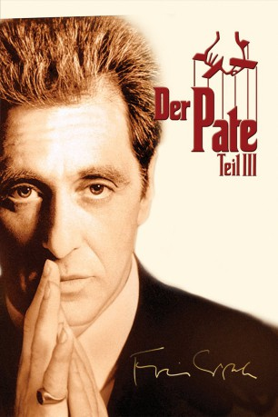

#2875 Der Pate 3
Alternativ: The Godfather Part III (Englischer Titel)
Auszeichnungen: für 7 Oscars nominiert
 
 IMDB-Wertung: 7.6 / 10
IMDB-Wertung: 7.6 / 10  Metascore: 60
Metascore: 60 
Der alternde Don Michael Corleone möchte den Familienbetrieb legalisieren und sich langsam aus dem Geschäft zurückziehen. Während er sich als Förderer der katholischen Kirche versucht, macht ihm vor allem ein Mensch zu schaffen: Vincent Mancini, Michaels zukünftiger Schwiegersohn und potentieller Nachfolger. Dieser schmiedet nämlich ganz andere Pläne.
Jahr: 1990
Dauer: 162 Minuten
FSK: 16
Land: USA Studio: Paramount PicturesTonspuren: DD5.1 - ,
Untertitel: Deutsch, Englisch,
Auflösung: 1080p (1920x1080) Größe: 14336 MB
Genre: Drama, Krimi
Regisseur:  Francis Ford Coppola
Francis Ford Coppola
Drehbuch: Mario Puzo, Francis Ford Coppola
Soundtrack: Carmine Coppola
Darsteller:
 Al Pacino als Don Michael Corleone
Al Pacino als Don Michael Corleone Diane Keaton als Kay Adams Michelson
Diane Keaton als Kay Adams Michelson Talia Shire als Connie Corleone Rizzi
Talia Shire als Connie Corleone Rizzi Andy Garcia als Vincent Mancini
Andy Garcia als Vincent Mancini Eli Wallach als Don Altobello
Eli Wallach als Don Altobello Joe Mantegna als Joey Zasa
Joe Mantegna als Joey Zasa George Hamilton als B.J. Harrison
George Hamilton als B.J. Harrison Bridget Fonda als Grace Hamilton
Bridget Fonda als Grace Hamilton Sofia Coppola als Mary Corleone
Sofia Coppola als Mary Corleone Raf Vallone als Cardinal Lamberto
Raf Vallone als Cardinal Lamberto- Franc D'Ambrosio als Anthony Vito Corleone
- Donal Donnelly als Archbishop Gilday
 Richard Bright als Al Neri
Richard Bright als Al Neri Helmut Berger als Frederick Keinszig
Helmut Berger als Frederick Keinszig Don Novello als Dominic Abbandando
Don Novello als Dominic Abbandando John Savage als Father Andrew Hagen
John Savage als Father Andrew Hagen Franco Citti als Calo
Franco Citti als Calo- Mario Donatone als Mosca
- Vittorio Duse als Don Tommasino
- Enzo Robutti als Don Licio Lucchesi
- Michele Russo als Spara
- Al Martino als Johnny Fontane
- Robert Cicchini als Lou Pennino
- Vito Antuofermo als Anthony 'The Ant' Squigliaro
- Willie Brown als Party Politician
 Carmine Caridi als Albert Volpe
Carmine Caridi als Albert Volpe Al Ruscio als Leo Cuneo
Al Ruscio als Leo Cuneo- Mickey Knox als Marty Parisi
 Rick Aviles als Mask #1
Rick Aviles als Mask #1 Michael Bowen als Mask #2
Michael Bowen als Mask #2 Brett Halsey als Douglas Michelson
Brett Halsey als Douglas Michelson- John Abineri als Hamilton Banker
 Marino Masé als Lupo
Marino Masé als Lupo- Simonetta Stefanelli als Apollonia Vitelli-Corleone (archive footage)
- Paco Reconti als Gesu
- Mimmo Cuticchio als Puppet Narrator
- Anthony Guidera als Anthony, the Bodyguard
- Frank Tarsia als Frankie, the Bodyguard
- Diana Agostini als Woman with Child at Street Fair
 Jessica DiCicco als Child
Jessica DiCicco als Child Catherine Scorsese als Woman in Cafe
Catherine Scorsese als Woman in Cafe Joe Drago als Party Security
Joe Drago als Party Security- David Hume Kennerly als Party Photographer
- Frank Albanese als Grand Marshall at St. Gennaro Feast (uncredited)
 Salvatore Billa als Lucchesi Bodyguard (uncredited)
Salvatore Billa als Lucchesi Bodyguard (uncredited) Sal Borgese als Lucchesi's Door Guard (uncredited)
Sal Borgese als Lucchesi's Door Guard (uncredited) John Cazale als Fredo Corleone (archive footage) (uncredited)
John Cazale als Fredo Corleone (archive footage) (uncredited)- Carmine Coppola als Bandleader (uncredited)
- Gia Coppola als Connie's Granddaughter (uncredited)
 Tony Devon als Mob Family Lawyer at Church (uncredited)
Tony Devon als Mob Family Lawyer at Church (uncredited)
Datei: X:\3-Trilogie(N-Z)\Pate\Pate 3, Der (1990, FSK16, 1920x1080).mkv seit 29.12.2015
Festplatte: HD Collection-3(N-Z)-6(A-Z)
 Alle Filme aus Gruppe '3-Trilogie(N-Z)\Pate'
Alle Filme aus Gruppe '3-Trilogie(N-Z)\Pate'